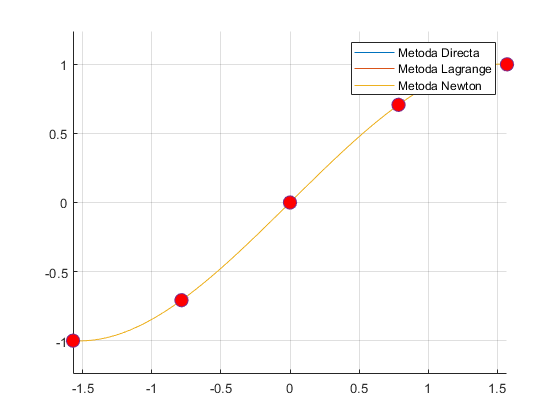
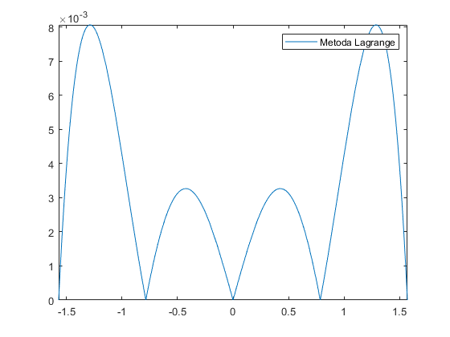
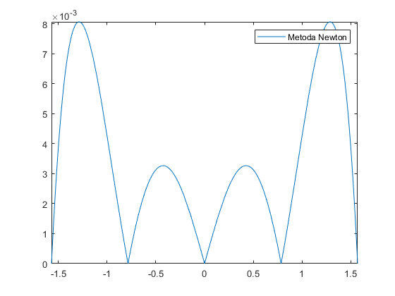

Contents
Algoritmi utilizati
disp('Metoda Directa');
type ('MetDirecta2.m');
disp('Metoda Lagrange');
type ('MetLagrange.m');
disp('Metoda Newton');
type ('MetNew.m');
disp('Substitutie Ascendenta');
type ('SubsAsc.m');
Metoda Directa
function [ y ] = MetDirecta2( X,Y,x )
syms P;
n=length(X)-1;
Pn=0;
for i=1:n+1
for j=1:n+1
A(i,j)=X(i)^(j-1);
end
end
a=A\transpose(Y);
for i=1:length(a)
Pn=Pn+a(i)*(P^(i-1));
end
Pn=matlabFunction(Pn,'vars',{P});
y=Pn(x);
end
Metoda Lagrange
function [ y ] = MetLagrange(X, Y, x)
n=length(X)-1;
syms P;
Pn=0;
for k=1:n+1
Lnk=1;
for i=1:n+1
if i~=k
Lnk=Lnk*((P-X(i)) / (X(k)-X(i)));
end
end
Pn=Pn + Lnk*Y(k);
end
Pn=matlabFunction(Pn, 'vars' , {P});
y=Pn(x);
end
Metoda Newton
function [ y ] = MetNew(X,Y,x)
n=length(X)-1;
syms P;
Pn=0;
for i=1:n+1
for j=1:n+1
if j==1
A(i,j)=1;
elseif j>i
A(i,j)=0;
else
p=1;
for k=1:j-1
p=p*(X(i)-X(k));
end
A(i,j)=p;
end
end
end
C = SubsAsc(A, Y');
for i=1:n+1
co=C(i);
for j=1:(i-1)
co=co*(P-X(j));
end
Pn=Pn+co;
end
Pn=matlabFunction(Pn, 'vars' , {P});
y=Pn(x);
end
Substitutie Ascendenta
function [ x ] = SubsAsc( A, b )
n=length(b);
x(1)=(1/A(1,1))*b(1);
for k=2:n
s=0;
for j=1:k-1
s=s+A(k,j)*x(j);
end
x(k)=(b(k)-s)/A(k,k);
end
x=transpose(x);
end
EXC4
f = @(x)sin(x);
n=5;
X=linspace(-pi/2,pi/2,n);
Y=f(X);
grid on
hold on
axis equal
disp ('Aplicand metoda directa obtinem polinomul');
syms x;
y=MetDirecta2(X,Y,x)
plot(linspace(-pi/2,pi/2,100), MetDirecta2(X,Y,linspace(-pi/2,pi/2,100)));
disp ('Aplicand metoda Lagrange obtinem polinomul');
syms x;
y=MetLagrange(X,Y,x)
plot(linspace(-pi/2,pi/2,100), MetLagrange(X,Y,linspace(-pi/2,pi/2,100)));
syms x;
disp ('Aplicand metoda Newton obtinem polinomul');
y=MetNew(X,Y,x)
plot(linspace(-pi/2,pi/2,100), MetNew(X,Y,linspace(-pi/2,pi/2,100)));
plot(X,Y,'o','MarkerFaceColor','r','Markersize',10);
legend('Metoda Directa', 'Metoda Lagrange', 'Metoda Newton');
hold off
disp('Reprezentare eroare E=|f-Pn|');
figure(2)
E1=abs(f(x)-MetDirecta2(X,Y,x))
fplot(E1,[-pi/2,pi/2]);
legend('Metoda Directa');
figure(3)
E2=abs(f(x)-MetLagrange(X,Y,x))
fplot(E2,[-pi/2,pi/2]);
legend('Metoda Lagrange');
figure(4)
E3=abs(f(x)-MetNew(X,Y,x))
fplot(E3,[-pi/2,pi/2]);
legend('Metoda Newton');
Aplicand metoda directa obtinem polinomul
y =
(8901050889487701*x)/9007199254740992 - (5133968287386267*x^3)/36028797018963968 - 299706632090081/5070602400912917605986812821504
Aplicand metoda Lagrange obtinem polinomul
y =
(562949953421312*x*(x + pi/2)*(x - pi/4)*(x + pi/4))/5140916555662875 - (562949953421312*x*(x - pi/2)*(x - pi/4)*(x + pi/4))/5140916555662875 + (1125899906842624*2^(1/2)*x*(x - pi/2)*(x + pi/2)*(x - pi/4))/5140916555662875 - (1125899906842624*2^(1/2)*x*(x - pi/2)*(x + pi/2)*(x + pi/4))/5140916555662875
Aplicand metoda Newton obtinem polinomul
y =
(3358993826523877*x)/9007199254740992 + ((3024156947890437*x)/9007199254740992 + 2375167312698781/4503599627370496)*(x + pi/4) - x*(x + pi/4)*((5133968287386267*x)/36028797018963968 + 1008052315963479/4503599627370496) - 1865452045155275/4503599627370496
Reprezentare eroare E=|f-Pn|
E1 =
abs(sin(x) - (8901050889487701*x)/9007199254740992 + (5133968287386267*x^3)/36028797018963968 + 299706632090081/5070602400912917605986812821504)
E2 =
abs(sin(x) + (562949953421312*x*(x - pi/2)*(x - pi/4)*(x + pi/4))/5140916555662875 - (562949953421312*x*(x + pi/2)*(x - pi/4)*(x + pi/4))/5140916555662875 - (1125899906842624*2^(1/2)*x*(x - pi/2)*(x + pi/2)*(x - pi/4))/5140916555662875 + (1125899906842624*2^(1/2)*x*(x - pi/2)*(x + pi/2)*(x + pi/4))/5140916555662875)
E3 =
abs(sin(x) - (3358993826523877*x)/9007199254740992 - ((3024156947890437*x)/9007199254740992 + 2375167312698781/4503599627370496)*(x + pi/4) + x*(x + pi/4)*((5133968287386267*x)/36028797018963968 + 1008052315963479/4503599627370496) + 1865452045155275/4503599627370496)
  
disp ('Cu cat crestem gradul polinomului apar mai multe variatii ale graficului')
disp ('Incepand cu n=64 polinomul isi pierde caracterul')
Cu cat crestem gradul polinomului apar mai multe variatii ale graficului
Incepand cu n=64 polinomul isi pierde caracterul